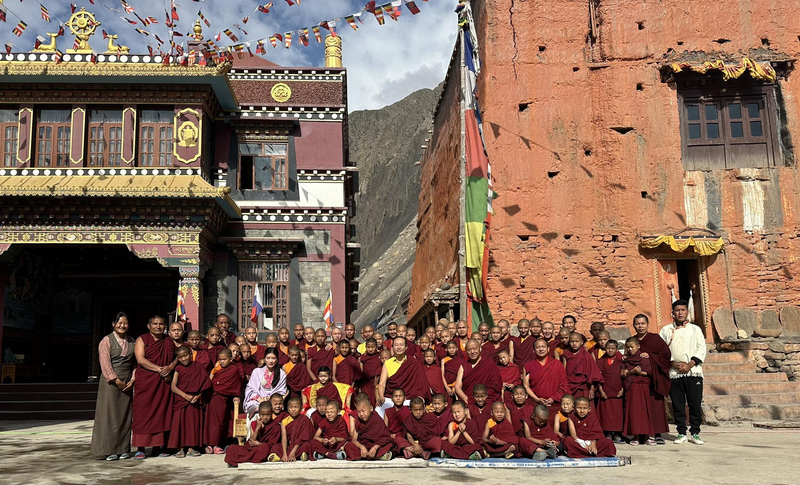

Discover the Wonders of Kagbeni
Kagbeni Village is a treasure trove of natural beauty, cultural heritage, and adventure. It attracts travelers seeking authentic experiences in the heart of the Himalayas. The village serves as a gateway to Upper Mustang and offers a plethora of attractions that showcase its rich history and breathtaking landscapes.
Must-See Attractions
Kag Chode Thupten Samphel Ling Monastery
The most prominent monastery in Kagbeni, built in the 15th century, is a spiritual center for the local community. The monastery features exquisite murals, intricate carvings, and ancient scriptures. Visitors can participate in prayers and rituals, gaining insights into Tibetan Buddhist practices.
Kali Gandaki River

The Kali Gandaki River flows through the valley, famous for its deep gorge and unique geological formations. The riverbanks are dotted with Shaligram fossils, which hold religious significance in Hinduism. Trekking along the river offers stunning views of the surrounding mountains and valleys.
Ancient Fortresses and Ruins

Exploring the remnants of ancient fortresses and ruins within and around Kagbeni reveals the village's historical significance as a trading post. The architecture reflects the fusion of Tibetan and Nepali styles, providing a glimpse into the past.
Activities and Experiences
There are plenty of activities to engage in while visiting Kagbeni:
- Cultural Tours: Engage with locals, learn about their traditions, and participate in daily activities.
- Trekking: Kagbeni serves as a major stop on the Annapurna Circuit and Upper Mustang Trek.
- Photography: Capture the breathtaking landscapes and unique architecture.
- Spiritual Retreats: Participate in meditation and spiritual practices in a serene environment.
Best Time to Visit
The best times to visit Kagbeni are during the spring (March to May) and autumn (September to November) when the weather is mild, and the skies are clear. The blooming flowers and lush landscapes in spring provide a beautiful backdrop, while the autumn season offers stunning views of the Himalayas.
Conclusion
Kagbeni Village is a captivating destination that offers a unique blend of culture, adventure, and spirituality. Whether exploring ancient monasteries, trekking through breathtaking landscapes, or engaging with the warm and welcoming local community, visitors are sure to create lasting memories in this enchanting village.